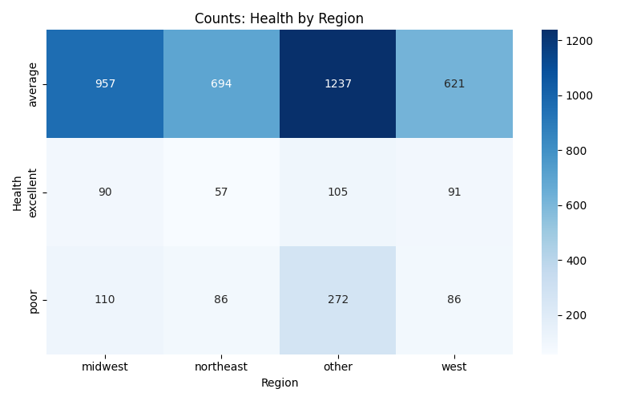
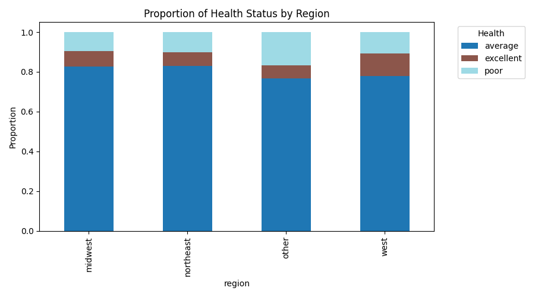
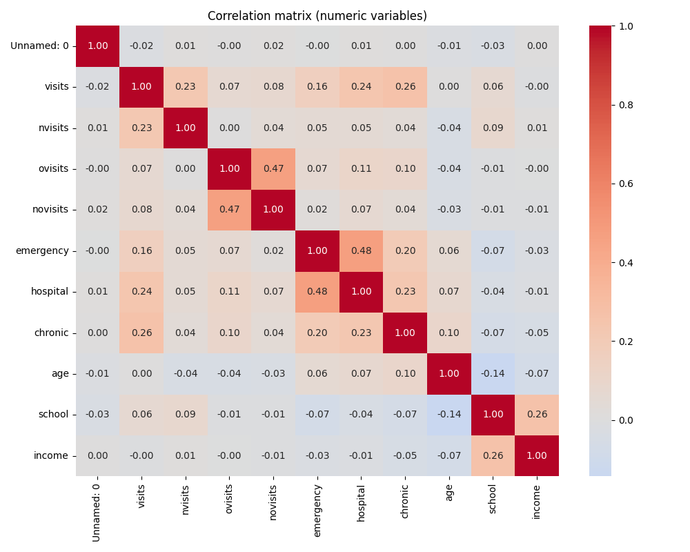
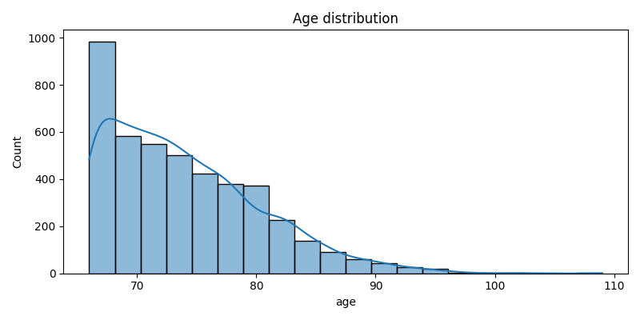
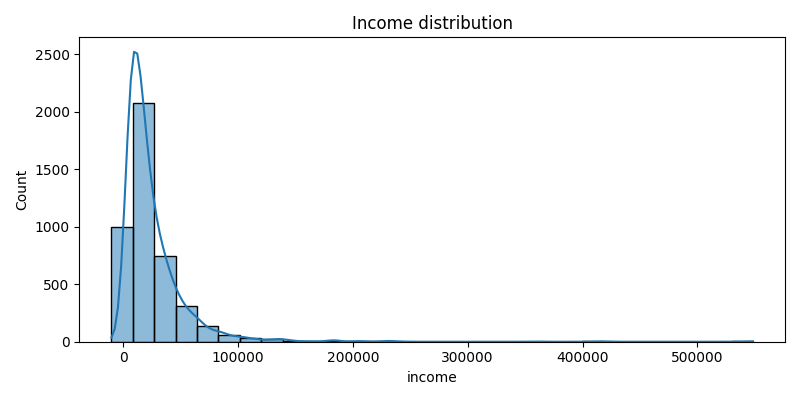
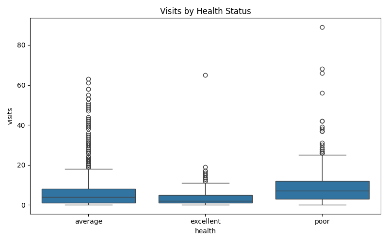

NSMES1988 Visual Report
Generated: Feb 16, 2026 — Visualizations and observations summarizing relationships between health, region, demographics, and utilization.
Library choice
Plots produced with Matplotlib + Seaborn for flexible, publication-quality statistical graphics.
Week 3: Health & Region
Counts: Health by Region (heatmap)

Proportion of Health by Region (stacked)

Week 4: Numerical Analysis & Correlation
Correlation matrix (numeric variables)

Age distribution

Income distribution

Visits by Health (boxplot)

Key Observations (summary)
- Health: Most records labeled average. Poor health groups have higher mean visits and higher mean age.
- Income: Mean income is higher for excellent health groups than for poor groups.
- Utilization: Poor health shows higher health service utilization (visits, emergency/hospital associations).
- Correlations: Moderate positive correlation between
hospital and emergency visits; other correlations are weaker.
Files & further steps
Saved plots are in the plots/ folder. CSV pivot tables and summaries are available as CSV files in the project root.
If you want a PDF report, I can convert this HTML to PDF next.